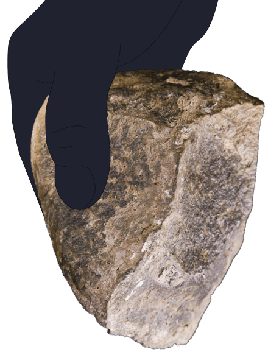
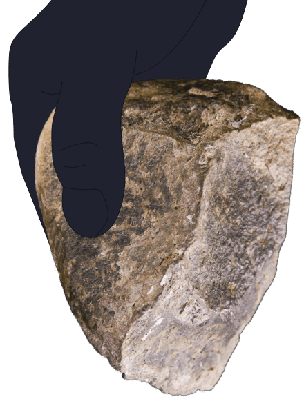

Череп справа — древнейшие известные останки человека современного анатомического типа, то есть такого же, как мы. Он найден в Южной Африке, ему 200 тыс. лет. Представители этой африканской популяции — предки всех современных людей, в том числе ваши.
Примерно в это же время в Европе возник другой продвинутый вид человека — неандертальский. Неандертальцы — не предки современных людей, а параллельная ветвь эволюции.
Впервые виды встретились на Ближнем Востоке 170 тыс. лет назад, когда сапиенсы впервые вышли из Африки. Генетики считают, что виды скрещивались: у современных людей до 2-4% неандертальских генов.
40 тыс. лет назад, после расселения сапиенсов по Европе, неандертальцы вымерли.


 
